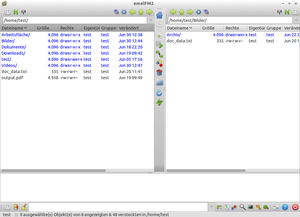
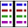
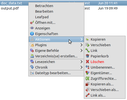
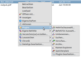
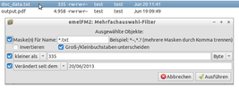
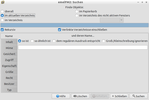
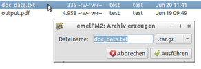
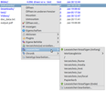

emelFM2
Dieser Artikel wurde für die folgenden Ubuntu-Versionen getestet:
Ubuntu 14.04 Trusty Tahr
Zum Verständnis dieses Artikels sind folgende Seiten hilfreich:
emelFM2  ist ein unter der GNU General Public License (GPL) herausgegebener grafischer Dateimanager für Linux/Unix-Systeme. Die Programmoberfläche orientiert sich mit seinen zwei Verzeichnisfenstern ein wenig an der Aufmachung des Norton Commanders und beherbergt im unteren Teil einen horizontalen Bereich zur Ausgabe von Dateioperationen/Fehlermeldungen, eine Befehlszeile und weitere Funktionsschaltflächen.
ist ein unter der GNU General Public License (GPL) herausgegebener grafischer Dateimanager für Linux/Unix-Systeme. Die Programmoberfläche orientiert sich mit seinen zwei Verzeichnisfenstern ein wenig an der Aufmachung des Norton Commanders und beherbergt im unteren Teil einen horizontalen Bereich zur Ausgabe von Dateioperationen/Fehlermeldungen, eine Befehlszeile und weitere Funktionsschaltflächen.
Der funktional sehr gut ausgestattete, detailliert konfigurierbare und aktiv weiterentwickelte Dateimanager lässt sich mittels etlicher Schaltflächen oder über  -Maustaste erreichbare, umfangreiche Kontextmenüs bedienen.
-Maustaste erreichbare, umfangreiche Kontextmenüs bedienen.
Übersicht über die Hauptfunktionen:
Drag'n'Drop zwischen den Verzeichnisfenstern
Umfangreiche Suchfunktionen
Inkrementelle Suche im Verzeichnisfenster während des Eintippens
Packen und Entpacken von Archiven mit umfangreichen Optionen
Mounten von Dateisystemen
Lesezeichen
interner Betrachter/Editor
benutzerspezifische konfigurierbare dateitypenbezogene Befehle
Arbeiten mittels einer Befehlszeile
Root-Modus (nur
su)
Die Entwicklung des Projekt scheint allerdings eingestellt zu sein, die letzte Version datiert auf Februar 2014.
Installation¶
Das Programm ist in den offiziellen Paketquellen vorhanden, allerdings in der alten Version 0.4.1. Die letzte veröffentlichte Version ist aber 0.9.1. Folgendes Paket muss installiert [1] werden:
emelfm2 (universe)
 mit apturl
mit apturl
Paketliste zum Kopieren:
sudo apt-get install emelfm2
sudo aptitude install emelfm2
PPA¶
Da das Paket aus den offiziellen Paketquellen seit Jahren nicht mehr mehr aktualisiert wird, ist die Installation über ein "Personal Package Archiv" (PPA) [2] empfehlenswert. Hier sind Pakete bis einschließlich Ubuntu 14.04 verfügbar. Vor einem Upgrade von der in den offiziellen Paketquellen vorhandenen zur aktuellen Version aus dem PPA ist das Verzeichnis ~/.config/emelfm2/ zu löschen.
Adresszeile zum Hinzufügen des PPAs:
ppa:emelfm2/release
Hinweis!
Zusätzliche Fremdquellen können das System gefährden.
Ein PPA unterstützt nicht zwangsläufig alle Ubuntu-Versionen. Weitere Informationen sind der  PPA-Beschreibung des Eigentümers/Teams emelfm2 zu entnehmen.
PPA-Beschreibung des Eigentümers/Teams emelfm2 zu entnehmen.
Damit Pakete aus dem PPA genutzt werden können, müssen die Paketquellen neu eingelesen werden.
Nach der Aktualisierung der Paketquellen erfolgt die Installation wie oben angegeben.
Ansicht¶
|  |
| emelFM2 Ansicht |
Der Dateimanager präsentiert sich beim Start in einer zweispaltigen Ansicht, welche zwei Verzeichnisfenster bereitstellt. Es gibt keine konventionellen Menüs, was die Bedienung etwas gewöhnungsbedürftig, aber nach einer kurzen Einarbeitungszeit recht intuitiv gestaltet.
Über den Verzeichnisfenstern finden sich jeweils einige Schaltflächen, welche direkt mit der Ansicht des jeweiligen Dateiordners in Beziehung stehen, wie z.B. zum Anzeigen der versteckten Dateien, zur Navigation usw. Zwischen den beiden Verzeichnisfenstern ist eine senkrechte Funktionsleiste angebracht, welche sich mit Operationen zwischen den beiden rechts und links geöffneten Ordnern beschäftigt, wie zum Beispiel Schaltflächen zum direkten Kopieren, Verschieben oder Umbenennen von Dateien, zum Erstellen von symbolischen Links von einem ins andere Fenster und mehr. Der untere Teil des Hauptfensters bietet einen Bereich zur Anzeige von Programmausgaben wie zum Beispiel Fehlermeldungen dar. Ganz unten ist dann noch eine Leiste mit Befehlszeile und allgemeinen Schaltflächen wie zur Anzeige des Speicherplatzes, der Suchfunktion, des Terminals, der Einstellungen etc.
Bedienung¶
Eine Besonderheit dieses Dateimanagers ist, dass die Programmfunktionen vollständig über grafische Schaltflächen und/oder -Klick-Kontextmenüs gesteuert werden.
Schaltflächen¶
| Übersicht über die Funktionsschaltflächen | |
| Schaltfläche | Funktion |
| /  | Verzeichnisfenster maximieren / anderes Fenster wiederherstellen. |
| / | Versteckte Dateien zeigen / verbergen. |
| / | Anzeigefilter aktivieren (Name, Größe, Datum) / deaktivieren. |
| Menü für Lesezeichenfunktionen anzeigen. | |
| Ins gleiche Verzeichnis wechseln wie im anderen Fenster. | |
| Navigationsschaltflächen. | |
| Heimatverzeichnis anzeigen. | |
 | CD-Laufwerk anzeigen. |
| Ausgewählte(s) Objekt(e) in anderes Fenster kopieren. | |
| Ausgewählte(s) Objekt(e) in anderes Fenster verschieben. | |
| Symbolischen Link des/der ausgewählten Objekts/Objekte im anderen Fenster erzeugen. | |
| Ausgewählte(s) Objekt(e) umbenennen. | |
| Ausgewählte(s) Objekt(e) in den Papierkorb verschieben. | |
| Neues Verzeichnis erstellen. | |
| Fensterinhalt aktualisieren. | |
| Aktives Fenster wechseln. | |
| Ausgabebereich maximieren. | |
| / | Ausgabebereich verstecken / anzeigen. |
| Ausgabebereich löschen. | |
| Befehlszeile löschen. | |
| Kindprozesse auflisten. | |
| Plugin: Speicherplatz der gewählten Objekte berechnen. | |
 | Objekt im aktiven Fenster nach Namen suchen. |
| Terminal im aktiven Verzeichnis öffnen. | |
Befehl als Root (su) ausführen. | |
| Laufwerk mounten oder unmounten. | |
| Programmeinstellungen, Hilfe, Programm beenden. | |
Kontextmenüs¶
Die Kontextmenüs, welche über -Mausklick auf ein Objekt im Verzeichnisfenster erscheinen, sind sehr reichhaltig mit Funktionen bestückt. Es finden sich Möglichkeiten Dateien zu betrachten, zu bearbeiten, die Dateieigenschaften auszulesen, Dateiaktionen durchzuführen, auf Lesezeichen und Chronik zuzugreifen und vieles mehr.
Aktionen¶
Neben den im Hauptfenster bereits angebotenen Dateioperationen wie Kopieren, Verschieben, Umbenennen und Verlinken von Dateien wird hier ebenfalls ein Löschbefehl unter Umgehung des Papierkorbs bereitgestellt. Es besteht ferner die Möglichkeit die Zugriffsrechte detailliert zu bearbeiten und den Eigentümer festzulegen.
Plugins¶
Das Programm bietet etliche Plugins, welche interessante Funktionen bereitstellen. Diese lassen sich über den Eintrag "Plugins -> Plugins bearbeiten" im Kontextmenü benutzerdefiniert hinzuschalten oder abwählen.
Über den Mehrfachauswahl-Filter lassen sich Dateiauswahlen treffen, welche mittels Dateinamensmasken (auch Platzhalter möglich), Spezifikationen zur Dateigröße oder zum Datum der letzten Veränderung präzisiert werden können.
Eine weitere ausgefeilte Suchfunktion lässt umfangreiche Suchparameter zu. Es kann überall, im aktuellen oder einem zu bestimmenden Verzeichnis oder im Papierkorb gesucht werden. Rekursive Suchoperationen sind ebenso möglich wie die Einbeziehung verlinkter Verzeichnisse. Suchparameter können sich auf Namen (exakt, ähnlich, regulärer Ausdruck), Inhalt, Mime-Typ, Sicherungs-, Änderungs- oder Zugriffsdatum, Größe, Berechtigungen usw. beziehen, so daß eine sehr exakte Suchoperation ermöglicht wird.
Erwähnt sei hier ebenfalls die Möglichkeit der Erstellung von Archiven.
Lesezeichen¶
Die Lesezeichen sowie ihre Bearbeitungsmöglichkeiten finden sich im Kontextmenü unter dem Punkt "Lesezeichen".
|  |
| Aktionen |
|  |
| Plugins |
|  |
| Plugin Mehrfachauswahl |
|  |
| Plugin Suchen |
|  |
| Plugin Archiverstellung |
|  |
| Lesezeichen |
Konfiguration¶
Über die Einstellungs-Schaltfläche ganz rechts unten im Programmfenster (dritte Schaltfläche von rechts) lässt sich das Programm umfangreich konfigurieren. Der Einstellungsmanager bietet Konfigurationsmöglichkeiten zum optischen Erscheinungsbild der grafischen Programmoberfläche und der einzelnen Verzeichnis- und Dialogfenster, zu den Befehlsausgaben im Ausgabebereich sowie zu den Lesezeichen. Die Konfigurationsdateien selbst liegen standardmäßig im Verzeichnis ~/.config/emelfm2, sofern nicht anders eingestellt.
Kommandozeilenoptionen¶
EmelFM2 lässt sich auch über das Terminal [4] mittels einiger Startoptionen aufrufen. Die Syntax für einen Start aus der Kommandozeile lautet
emelfm2 [OPTION]
| Auswahl einiger Kommandozeilen-Startoptionen | ||
| Kurzform | Langform | Bedeutung |
-1 /PFAD/ZUM/VERZEICHNIS | --one /PFAD/ZUM/VERZEICHNIS | Zeigt beim Programmstart dieses VERZEICHNIS im ersten Verzeichnisfenster. |
-2 /PFAD/ZUM/VERZEICHNIS | --two /PFAD/ZUM/VERZEICHNIS | Zeigt beim Programmstart dieses VERZEICHNIS im zweiten Verzeichnisfenster. |
-c /PFAD/ZUM/VERZEICHNIS | --config /PFAD/ZUM/VERZEICHNIS | Legt den Pfad zu den Konfigurationsdateien manuell fest. |
-t /PFAD/ZUM/VERZEICHNIS | --trash /PFAD/ZUM/VERZEICHNIS | Legt den Pfad zum Papierkorb manuell fest (Standard: ~/.local/shard/Trash/files). |
-h | --help | Gibt kurze Hilfe-Informationen aus. |
-v | --version | Gibt Versions-Informationen aus. |
Handbuch¶
Über diese Erläuterungen hinausgehende Informationen zur Nutzung des Dateimanagers sowie weitere Startoptionen finden sich im Online-Handbuch der Entwickler sowie in der Manpage des Programms.
 Übersichtsartikel
Übersichtsartikel- Erstellt mit Inyoka
-
 2004 – 2017 ubuntuusers.de • Einige Rechte vorbehalten
2004 – 2017 ubuntuusers.de • Einige Rechte vorbehalten
Lizenz • Kontakt • Datenschutz • Impressum • Serverstatus -
Serverhousing gespendet von